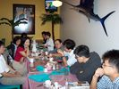
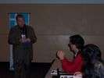
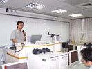
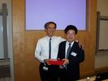
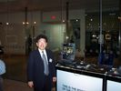
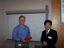
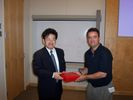

COSA活動記錄簿
留下COSA所辦活動之紀錄
首頁
相簿目錄
::
最新上傳
::
最新留言
::
熱門圖片
::
最高評分
最新上傳 - cosa

168 次觀看
三月 21, 2005

167 次觀看
三月 21, 2005

221 次觀看
三月 21, 2005
154 次觀看
三月 21, 2005
142 次觀看
三月 21, 2005
188 次觀看
三月 21, 2005
153 次觀看
三月 21, 2005

167 次觀看
三月 21, 2005

214 次觀看
三月 21, 2005

151 次觀看
三月 21, 2005

198 次觀看
三月 21, 2005
176 次觀看
三月 21, 2005
752 張圖片，共 63 頁
1
53
54
55
56
57
58
59
60
61
62
63